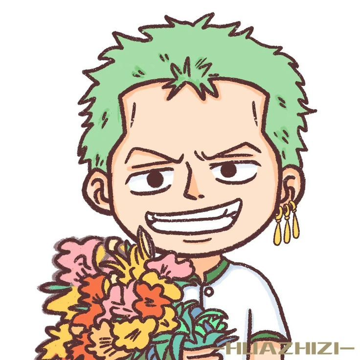

Mi querida Mabel,
Desde que llegaste a mi vida, cada día se ha convertido en una travesía llena de emociones y sorpresas, como navegar en las aguas del Grand Line.
Eres mi nakama, mi compañera de aventuras, y la inspiración que me impulsa a enfrentar cada desafío con la determinación de Luffy persiguiendo su sueño de ser el Rey de los Piratas.
Al igual que en las historias de One Piece, he aprendido que el verdadero tesoro no está en el oro ni en las riquezas, sino en la pasión, la amistad y el amor que compartimos. Tu sonrisa ilumina mis días y tu energía me anima a seguir adelante, incluso en las tormentas más fuertes. Gracias por enseñarme que cada momento vivido a tu lado es un tesoro invaluable.
Espero poder seguir recorriendo este inmenso océano de la vida contigo, descubriendo nuevos horizontes y creando recuerdos que atesoremos como los mapas del tesoro. Eres mi faro en la oscuridad y la fuerza que me impulsa a soñar, a ser valiente y a vivir cada instante como si fuese una gran aventura.
Con todo mi amor y admiración,
Ale